GitHub
Introduction
学习笔记整理学习
01 to 03
01 函数与复合函数
02 函数的4个特性
03 极限的定义与性质
04 to 06
04 无穷小、无穷大及其阶
05 函数极限的计算 1
06 函数极限的计算 2
07 to 09
07 数列极限的计算
08 曲线的渐近线
09 函数的连续性与间断点
10 to 12
10 导数的定义
11 微分的定义
本书使用 GitBook 发布
01 函数与复合函数
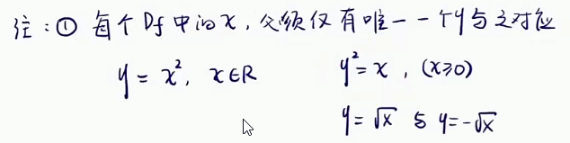
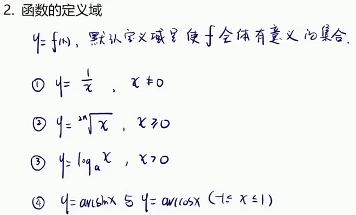
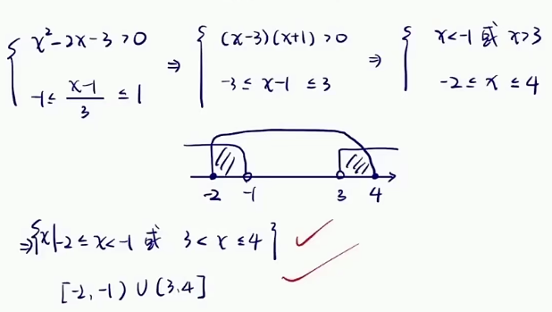
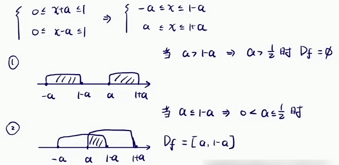
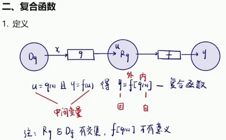
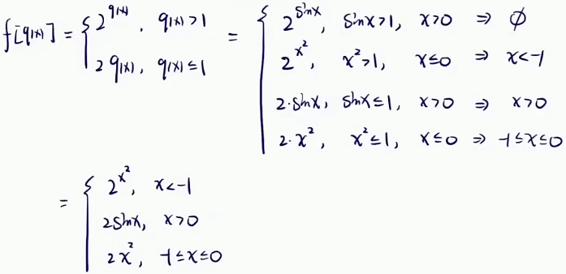
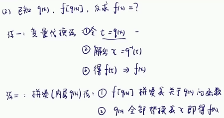
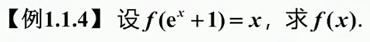
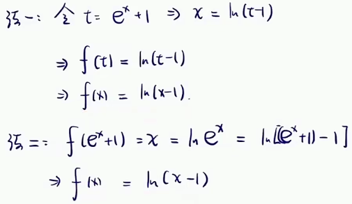
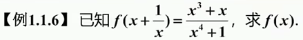
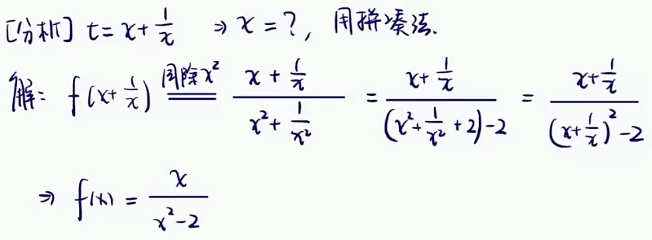
results matching "
"
No results matching "
"